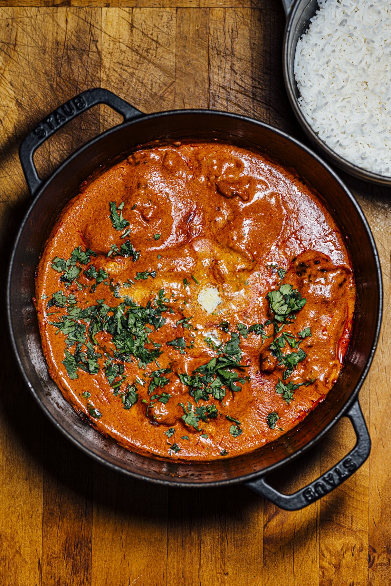

Butter Chicken

Butter chicken is a popular Indian dish made with marinated chicken cooked in a rich, creamy tomato-based sauce. The sauce is typically made with butter, cream, tomatoes, and a blend of spices like garam masala, cumin, and coriander. Often served with naan or rice, butter chicken is known for its smooth texture and flavorful, mildly spiced sauce, making it a favorite in Indian cuisine.
- Chicken: 1 1/2 pounds boneless chicken thighs.
- Onion: 1 yellow onion finely sliced.
- Garlic: 4 cloves minced garlic.
- Ginger: 2 teaspoons grated ginger.
- Juice: 1 tablespoon lemon juice.
- Butter: 3 tablespoons butter.
- Puree: 1 cup tomato puree.
- Yogurt: 1/4 cup plain yogurt.
- Cashew: 1/3 cup cashews.
- Cilantro: 1 bunch fresh cilantro.
- Seasonings, herbs, and sauces:
- 1 teaspoon ground cumin.
- 1 tablespoon white sesame seeds.
- 2 teaspoons garam masala.
- 2 teaspoons tandoori masala powder.
- 2 teaspoons madras curry powder.
- ½ teaspoon ground cardamom.
- ½ teaspoon ground cayenne pepper.
- Salt and ground black pepper to taste.
- Gather the ingredients.
- Make a spice mix by combining garam masala, tandoori masala, curry powder, cumin, cardamom, cayenne, salt, and black pepper in a small bowl; set aside.
- Place chicken in a large bowl and add 1/2 of the spice mixture; turn to coat evenly.
- Melt 1 tablespoon butter in a large skillet over medium heat. Add chicken; cook and stir until lightly browned, about 10 minutes. Remove from heat.
- Melt remaining 2 tablespoons butter in a large saucepan over medium heat. Add onion; cook and stir until soft and translucent, about 5 minutes. Stir in remainder of the spice mixture, garlic, lemon juice, and ginger; cook and stir until combined, about 1 minute.
- Stir tomato puree into onion mixture and cook, stirring frequently, about 2 minutes. Pour in half-and-half and yogurt. Reduce heat to low and simmer sauce, stirring frequently, about 10 minutes. Remove from heat.
- Blend cashews in a blender until finely ground. Add sauce to the blender; puree until smooth.
- Pour blended sauce over chicken in the skillet. Simmer until thickened, 10 to 15 minutes. Garnish with cilantro.